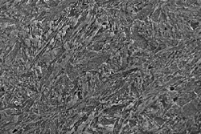

The springs used to power clocks and watches are critical components. For a clock to function these must be made of the best available high strength steel. The study of springs shows the evolution of steel technology over time. The microstructures of early springs shows that they were heated red hot and then cooled in air to harden them.
Later springs were heated, cooled rapidly by plunging them into oil and then warmed up to. This type of heat treatment gives a different, finer microstructure, as shown, and better spring behaviour by making them less brittle.